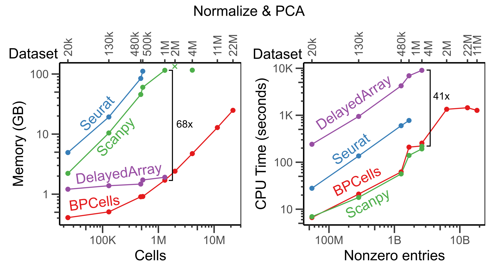
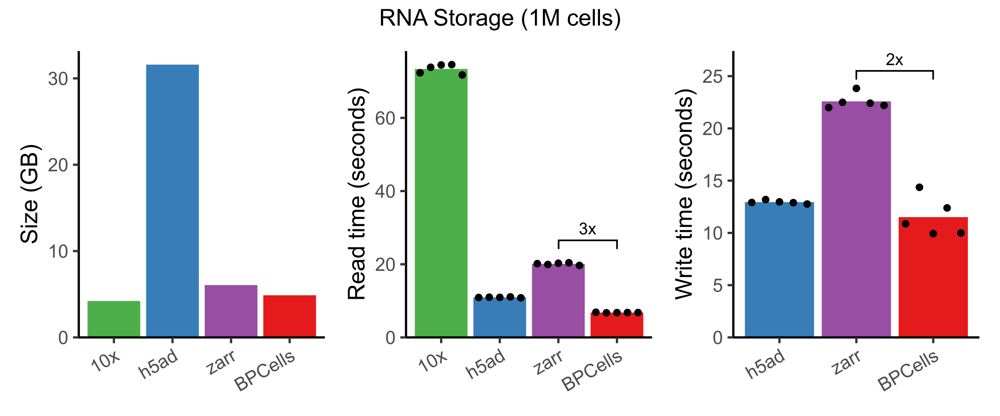
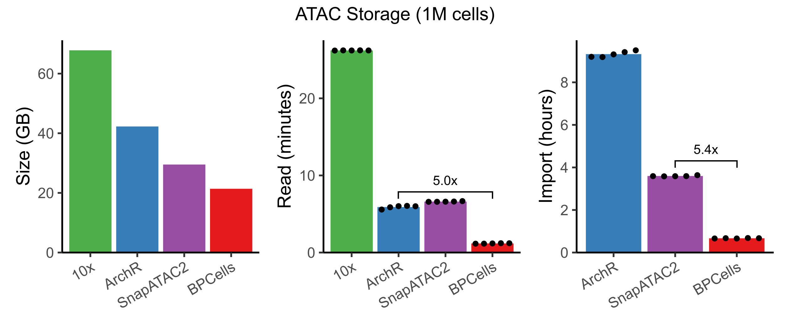
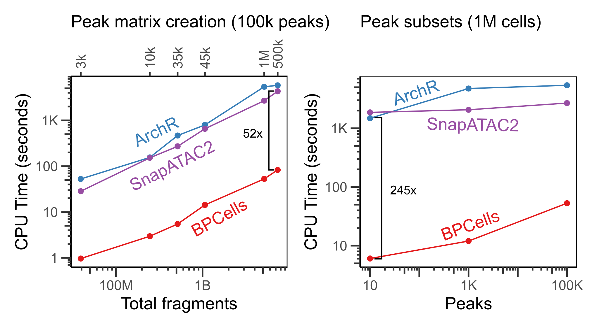
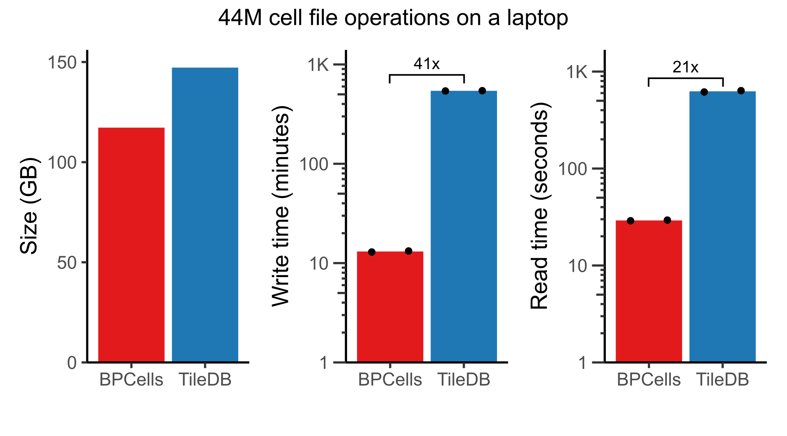
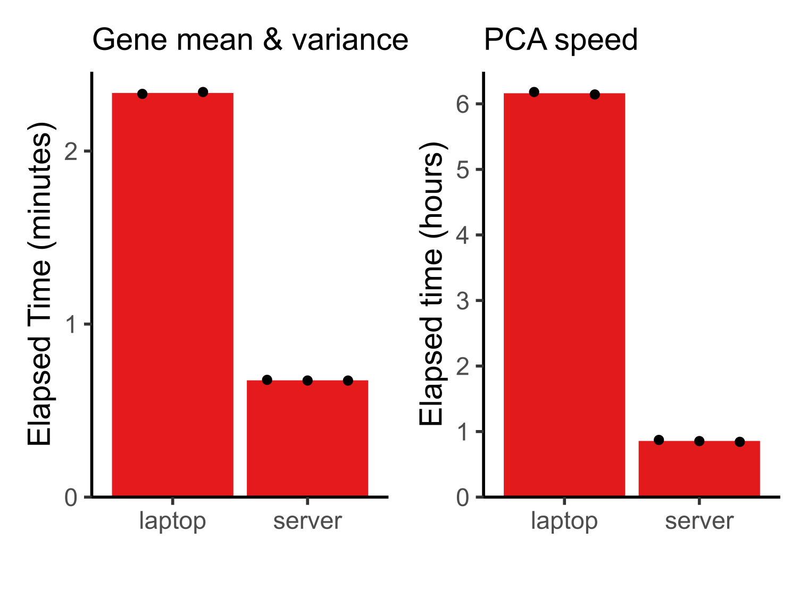

These performance benchmarks are based on extensive benchmarks from the BPCells manuscript. Full benchmarking/plotting code and data TSVs are available here. These numbers are just a snapshot of tool performance as of December 2024, so we encourage you to check performance on your own datasets with the latest versions of all software packages to get the most up-to-date results.
RNA-seq normalization + PCA
Because BPCells can perform all operations streaming from disk, it is able to use dramatically less memory than traditional in-memory workflows. We have also extensively optimized the underlying C++ code to make BPCells much faster than traditional disk-backed tools like DelayedArray.
In the benchmark below, we show the time and memory usage to perform a standardized workflow of data normalization, variable gene selection, and PCA. Note that we show Seurat’s in-memory workflow, though Seurat v5 also offers a BPCells integration for disk-backed operations. All tools were given a 3 hour time limit and up to 256GB of RAM, but only BPCells was able to process the largest datasets within these resource limits.

Notice that execution speed tends to scale with the number of non-zero entries in a matrix, whereas memory usage for BPCells scales with the number of cells (i.e. space required to store the output PCA embeddings).
Bitpacking compression
Counts matrices (RNA or ATAC)
BPCells uses bitpacking compression to help speed up disk-backed workflows. While general purpose compression algorithms shrink file sizes and reduce disk read bandwidth, they typically come at a high compute cost. BPCells is able to provide similar space savings to general-purpose compression algorithms like gzip (10x HDF5) and LZ4-Blosc (zarr), but with much lower compute cost. AnnData h5ad files default to not using compression due to the speed costs for read/write, but with BPCells bitpacking compression we can get faster read/write with 4-7x space savings.
Here, we benchmark storing + loading a 1.3M cell RNA-seq experiment from 10x Genomics, using default compression settings for each storage format1. Notice that only BPCells is the only compressed format fast enough to provide faster read and write speeds than an uncompressed h5ad2.

Note that we don’t benchmark 10x HDF5 write, since 10x does not directly provide software to perform arbitrary matrix writes. It would likely be even slower than the 10x read speed.
Fragment alignments (ATAC)
In addition to RNA/ATAC counts matrices, BPCells also introduces compressed file formats for scATAC-seq fragments. We compared to 10x fragment files, ArchR, and SnapATAC2 for storage of a 1M cell dataset, and found that BPCells gave the smallest file sizes and fastest read/write speeds.
By using bitpacking compression, BPCells can afford the storage space to keep fragments in fully genome-sorted order. This makes import from 10x fragment files dramatically faster compared to ArchR and SnapATAC2 which must re-sort fragments to be grouped by cell. We’ll see later that it also speeds up genomic overlap calculations.

ATAC-seq overlap calculations
When working with large reference datasets, it’s often helpful to be able to quickly re-quantify cell x peak overlap matrices directly from fragments, as datasets all usually use different sets of peak coordinates depending on the biology of interest. BPCells stores fragments in genome-sorted order, so it’s able to perform peak calculations much faster than ArchR or SnapATAC2.
BPCells takes only seconds to find all overlaps with a small set of 10 peaks, which also means that it is very fast at calculating genomic coverage tracks for visualization of large datasets.

44M cell analysis of CELLxGENE census
With the combination of fast storage and disk-backed compute, BPCells is able to handle all unique human cells from the CELLxGENE census on a laptop with 16 threads and 32GB of RAM. Compared to the TileDB matrix storage format, we found that the BPCells file formats offer much faster read/write times at similar space usage3. Note that this dataset would take over 750GB to store the counts matrix without compression.

Because of these much faster file read speeds, BPCells is able to do light compute tasks like computing per-gene mean and variance across 44M cells in <3 minutes. PCA is the most expensive operation BPCells performs, using 167 passes over the input matrix to calculate 32 PCs. Still, it completes in less than 1 hour on a server and 6.2 hours on a laptop. This makes atlas-scale analysis possible on a laptop while leaving headroom on a server for datasets up to an order of magnitude larger.

Benchmark details: Mean and variance computed on a log-normalized matrix, unlike the plots in the BPCells manuscript which were just scaled by read counts to match the default normalization of the CELLxGENE census. Laptop has 32GB of RAM and 16 threads; server has 256GB of RAM and 32 threads. See BPCells manuscript for further details.
Update log
- March 29, 2025: Update benchmarks with numbers + performance from
BPCells manuscript.
- Normalization & PCA: Add more comparison datasets, add DelayedArray results, and add multithreading plot
- RNA storage: Add comparisons with zarr and include write times.
- ATAC storage: Add 10x and SnapATAC2 results and include read times, and switch comparison to be on a larger dataset.
- Peak matrix: Update benchmarks to show cross-dataset results at 100k peaks, and peak subset results on 1M cells rather than 30k cells. Add in comparisons to SnapATAC2.
- Add results for 44M cell analysis.
- March 30, 2023: Added clarification that AnnData benchmarks referred to h5ad with default compression settings (i.e. none).
- March 29, 2023: Created benchmark page.